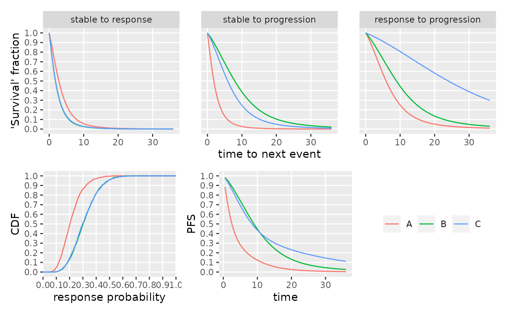

Application to Probability of Success Calculation
Kevin Kunzmann
Source:vignettes/application-to-probability-of-success.Rmd
application-to-probability-of-success.Rmd
library(oncomsm)
library(ggplot2)
library(dplyr, warn.conflicts = FALSE)
library(future) # parallel processing
plan(multisession) # instruct future how to run in parallelBackground
For a general introduction to the multi-state approach used throughout this package, see the vignette Multi-state Models for Early Oncology.
Under a fully generative multi-state model, future trial data can be sampled from the prior predictive distribution (if no data is available) or the posterior predictive distribution conditioning on data as it accrues. This can be used to evaluate any decision criterion to determine trial success and thus compute the Probability of Success.
Decision criterion
Assume that the sample size (and follow-up) of the trial and the randomization scheme are fixed upfront. Let further \(D_t \in \mathbb{D}\) be the observed (visit) data at time point \(t\) after the start of the trial. Let \(\tau\) be the stopping time of the trial (all \(n\) individuals recruited an minimal follow-up reached) The final decision whether or not the trial is considered a success can then be modeled as a function \(\phi: \mathbb{D} \to \{0,1\}\) with
\[\phi(D_\tau)=1 :\Leftrightarrow D_\tau\ \text{is considered a success}\ . \]
If we can sample data \(D_\tau|\theta\) given a generative model and parameters \(\theta\), we can evaluate the Probability of Success \[ \operatorname{PoS} = \int \phi(D_\tau) \cdot f(\theta) \operatorname{d}\theta \] where \(f(\theta)\) is a prior over the model parameters using MCMC integration by simulating forward form the predictive distribution. If data \(D_t=d_t\) is observed for \(t\leq\tau\), one can update PoS using Bayes Theorem \[ \operatorname{PoS}\,|\, (D_t=d_t \ ) = \int \phi(D_\tau\,|\,D_t=d_t) \cdot f(\theta\,|\,D_t=d_t) \operatorname{d}\theta \ . \]
Examples for such decision rules could be …
- a quantile of the posterior distribution of the response rate being above a certain relevance threshold,
- a quantile of the posterior distribution of the PFS6 rate being above a certain relevance threshold,
- a quantile of the posterior distribution of PFS being above a certain threshold,
- or a combination of the above.
Example
Prior specification
Assume the following prior for the multi-state model .
mdl <- create_srp_model(
# names of the arms/groups
group_id = c("A", "B", "C"),
# per-group logodds of response|stable
logodds_mean = c(logodds(.20), logodds(.3), logodds(.3)),
logodds_sd = c(.5, .5, .5),
# m[i,j] is the median time to next event for group i and transition j
median_time_to_next_event = matrix(c(
3, 2, 6,
2, 8, 9,
2, 6, 24
), byrow = TRUE, nrow = 3, ncol = 3),
# fixed standard deviation of the prior for all median times
median_time_to_next_event_sd = matrix(
1, byrow = TRUE, nrow = 3, ncol = 3
),
# uniform prior over the shape parameter, difficult to identify,
# better keep it tight to avoid issues with the sampler
shape_min = matrix(
.75, byrow = TRUE, nrow = 3, ncol = 3
),
shape_max = matrix(
2, byrow = TRUE, nrow = 3, ncol = 3
),
# the visit interval
visit_spacing = c(1.2, 1.2, 1.2)
)We can now sample from the prior and visualize it.
smpl_prior <- sample_prior(mdl, warmup = 500, nsim = 2000, seed = 6835L)
plot(mdl, dt = c(0, 36), sample = smpl_prior)
The induced prior over PFS rates at 3, 6, 12, and 18 months is
tbl_pfs_rates <- sample_pfs_rate(mdl, c(3, 6, 12, 18), sample = smpl_prior) %>%
mutate(t = factor(t))
ggplot(tbl_pfs_rates) +
geom_boxplot(aes(x = t, y = pfs, color = group_id)) +
scale_color_discrete("") +
labs(x = "t", y = "Pr[no death or progression before t]")Definition of success criterion
Let us consider two success criteria per arm:
- \(\phi_1^i(D_\tau) = 0.25 \ \text{posterior quantile of response is greater than} \ 0.3\)
- \(\phi_2^i(D_\tau) = 0.25 \ \text{posterior quantile of the PFS12 rate is greater than} \ 0.5\)
# the simulation number is only chosen so small for demonstration purposes
# we compute both phi_1 and phi_2 jointly to reuse the same posterior sample
eval_phi <- function(data, prob = 0.25, nsim = 250) {
smpl <- sample_posterior(mdl, data = data, seed = 38497, warmup = 150L, nsim = nsim)
mtx_p <- rstan::extract(smpl, "p")$p
p <- apply(mtx_p, 2, function(x) quantile(x, .25))
res <- sample_pfs_rate(mdl, 12, smpl) %>%
group_by(group_id) %>%
summarize(pfs12 = quantile(pfs, .25)) %>%
mutate(
p = p,
phi_1 = p >= 0.3,
phi_2 = pfs12 >= 0.5
) %>%
select(group_id, phi_1, phi_2)
return(res)
}
tbl_prior_predictive <- sample_predictive(
mdl,
n_per_group = rep(30L, 3),
sample = smpl_prior,
nsim = 100L, # same, here, only for demonstration purposes
seed = 34930L
) %>%
group_by(iter) %>%
tidyr::nest()
plan(multisession) # instruct future how to run in parallel
# it is a good idea to cache long running simulation ;)
tbl_results <- xfun::cache_rds({
tbl_prior_predictive %>%
ungroup() %>%
mutate(
res = furrr::future_map(
data, eval_phi,
.options = furrr::furrr_options(seed = TRUE, scheduling = 5L)
)
) %>%
select(-data)
}, dir = ".cache/", file = "sim_results.rds") # end cachingAdvanced decision boundaries: connection with bhmbasket
The bhmbasket package implements dynamic borrowing between arms in basket trials via Bayesian hierarchical models (BHMs). Here, we demonstrate how the prior predictive sample generated earlier can be used in conjunction with such a shrinkage estimator to compute PoS for a decision based on a BHM. We use the “Berry” type model for analysis of the response data and use a posterior \(0.25\) quantile of the response rate above \(0.3\) to declare success (\(\phi_3^i\)).
prms_berry <- bhmbasket::setPriorParametersBerry(
mu_mean = bhmbasket::logit(0.25),
mu_sd = 1,
tau_scale = 1
)
data_to_bhmbasket_trial <- function(data) {
data %>%
group_by(group_id, subject_id) %>%
summarize(responder = any(to == "response")) %>%
summarize(r = sum(responder), n = n()) %>%
{bhmbasket::createTrial(.$n, .$r)} %>%
return()
}
eval_phi_3 <- function(data, nsim = 250) {
prob = 0.25 # needs to be hard coded
set.seed(2340239L)
res <- suppressMessages(bhmbasket::performAnalyses(
scenario_list = data_to_bhmbasket_trial(data),
method_names = "berry",
evidence_levels = 1 - prob,
prior_parameters_list = prms_berry,
target_rates = c(.2, .3, .3),
n_mcmc_iterations = nsim,
verbose = FALSE
))
return(tibble(
group_id = attr(mdl, "group_id"),
phi_3 = res$scenario_1$quantiles_list$berry[[1]][5, 2:4] >= .3
))
}
# it is a good idea to cache long running simulation ;)
tbl_results_bhmbasket <- xfun::cache_rds({
tbl_prior_predictive %>%
ungroup() %>%
mutate(
res = furrr::future_map(
data, eval_phi_3,
.options = furrr::furrr_options(seed = TRUE)
)
) %>%
select(-data)
}, dir = ".cache/", file = "sim_results_bhmbasket.rds") # end caching
tbl_results_bhmbasket %>%
tidyr::unnest(res) %>%
group_by(group_id) %>%
summarize(
pos_phi_3 = mean(phi_3)
) %>%
left_join(
tbl_results %>%
tidyr::unnest(res) %>%
group_by(group_id) %>%
summarize(
pos_phi_1 = mean(phi_1),
pos_phi_2 = mean(phi_2)
),
by = "group_id"
)
#> # A tibble: 3 × 4
#> group_id pos_phi_3 pos_phi_1 pos_phi_2
#> <chr> <dbl> <dbl> <dbl>
#> 1 A 0.06 0.04 0
#> 2 B 0.22 0.21 0
#> 3 C 0.31 0.35 0.01Computing dynamic Probability of Success
The Bayesian framework has two distinct advantages when applied in an early setting.
recruitment_rate_overall <- 3
tbl_interim <- sample_predictive(
mdl,
sample = smpl_prior,
n_per_group = c(30L, 30L),
nsim = 250,
seed = 3423423
) %>%
filter(iter == 1) %>%
select(-t_sot) %>%
{left_join(
.,
select(., subject_id, group_id) %>%
distinct() %>%
arrange(runif(n())) %>% # permute groups
mutate(
t_sot = cumsum(rexp(n = n(), rate = recruitment_rate_overall)), # poisson recruitment process
),
by = c("subject_id", "group_id")
)} %>%
mutate(
t_min = t_min + t_sot,
t_max = t_max + t_sot
) %>%
mstate_to_visits(mdl, .) %>%
filter(t <= 10) %>%
visits_to_mstate(
start_state = "stable",
absorbing_states = "progression",
now = 10
)
#> 'mstate_to_visits.srp_model' is experimental
tbl_interim_sample_sizes <- tbl_interim %>%
select(group_id, subject_id) %>%
distinct() %>%
group_by(group_id) %>%
summarize(n = n())
smpl_posterior <- sample_posterior(
mdl,
tbl_interim,
nsim = 2000, warmup = 250, seed = 76947
)
tbl_to_be_recruited <- tibble(
group_id = tbl_interim_sample_sizes$group_id,
n_to_be_recruited = 30 - tbl_interim_sample_sizes$n
) %>%
mutate(
tmp = purrr::map(
n_to_be_recruited,
~tibble(
# use unique identifiers to avoid clashing between groups
subject_id = uuid::UUIDgenerate(n = .),
# sample recruitment times per group using half the overall
# recruitment rate
t_sot = cumsum(rexp(n = ., rate = recruitment_rate_overall/2))
)
)
) %>%
select(-n_to_be_recruited) %>%
tidyr::unnest(tmp) %>%
# add information on starting state etc to expand to full mstate table
mutate(
from = "stable",
to = NA_character_,
t_min = t_sot + 1/30, # preclude events on the day of recruitment
t_max = Inf # right censored
)
tbl_mstate_interim_forward <- bind_rows(tbl_interim, tbl_to_be_recruited)
tbl_posterior_predictive <- impute_predictive(
mdl,
data = tbl_mstate_interim_forward,
sample = smpl_posterior,
nsim = 100
)
tbl_posterior_predictive
#> # A tibble: 7,807 × 8
#> subject_id group…¹ from to t_min t_max t_sot iter
#> <chr> <chr> <chr> <chr> <dbl> <dbl> <dbl> <int>
#> 1 2fe5c666-b261-41fb-932f-7077f72… B stab… prog… 14.7 15.9 0.231 1
#> 2 2fe5c666-b261-41fb-932f-7077f72… B stab… prog… 0.264 1.46 0.231 2
#> 3 2fe5c666-b261-41fb-932f-7077f72… B stab… prog… 11.1 12.3 0.231 3
#> 4 2fe5c666-b261-41fb-932f-7077f72… B stab… resp… 1.46 2.66 0.231 4
#> 5 2fe5c666-b261-41fb-932f-7077f72… B resp… prog… 11.1 12.3 0.231 4
#> 6 2fe5c666-b261-41fb-932f-7077f72… B stab… resp… 0.264 1.46 0.231 5
#> 7 2fe5c666-b261-41fb-932f-7077f72… B resp… prog… 7.46 8.66 0.231 5
#> 8 2fe5c666-b261-41fb-932f-7077f72… B stab… prog… 3.86 5.06 0.231 6
#> 9 2fe5c666-b261-41fb-932f-7077f72… B stab… prog… 5.06 6.26 0.231 7
#> 10 2fe5c666-b261-41fb-932f-7077f72… B stab… prog… 15.9 17.1 0.231 8
#> # … with 7,797 more rows, and abbreviated variable name ¹group_id
#> # ℹ Use `print(n = ...)` to see more rows